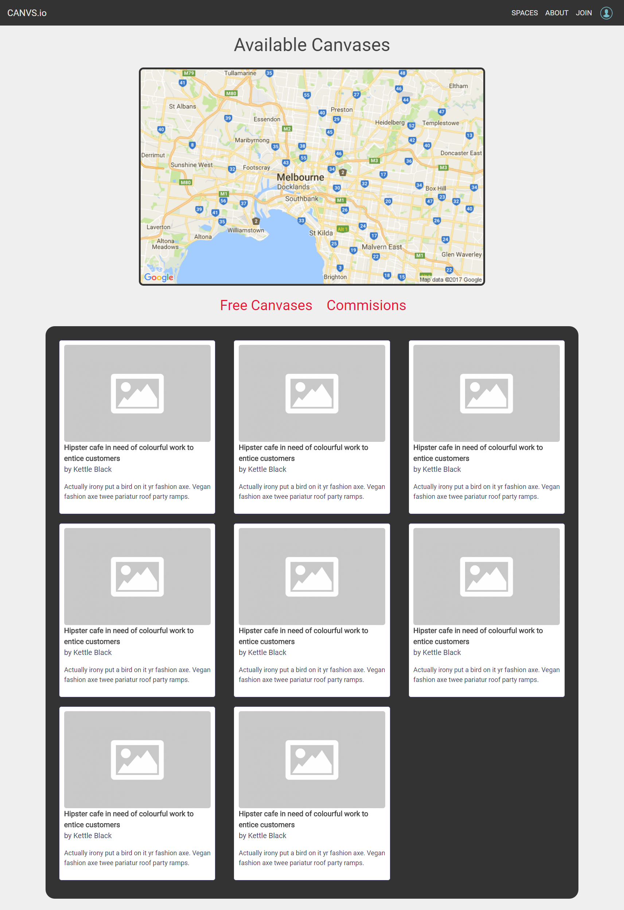

Static Page Creation
CANVS.io Re-Design
As the goal of this week was to produce working static web pages based off the designs of last week, as a group we needed to decide if we were happy with our designs and ready to proceed with implementing them. Upon meeting and discussing them, while we were happy with the core ideas presented in last week’s designs, we were not happy completely with their final outcome and wanted to simplify them to be more in line with the simplistic and clean design scheme we were aiming for.
Our moodboard decision remained the same, wanting to have a relatively neutral and simple colour scheme for the website, with the submitted art designs providing the much needed colour to the website.
Landing Page
Reviewing our landing page, the core concept of having a navigation bar, logo and slideshow of completed works were all ideas we wanted to keep. We decided to implement these further down the page where the user has to scroll down for further information – allowing it to come into view, including a new about us section detailing what CANVS.io does. What we decided to change was to include an extremely simple and stylistic view of our website upon landing, giving a simple choice for artists or businesses to get immediately started.

|
|
Spaces Page
Similarly our spaces page underwent a redesign to employ an overall much cleaner look. Again, the core concept of a Google Maps map showcasing where blank canvases were available, and a listing of currently available jobs with a filter bar for more specific searching were features we wanted to keep. However, rather than displaying our jobs in static horizontal boxes, we decided to implement a more vertical Pintrest styled listing for jobs. Different jobs would be sized to appropriate boxes and available for viewing in a never-ending list with important details immediately viewable for users to be able to scroll quickly through a page and absorb all of the content.

|
|
Project Page
Finally our projects page underwent a similar redesign, once again keeping core concepts including: a title, description, and submitted ideas on a space. However, removing horizontality from our design and choosing to show information vertically scrolling down the page was a decision made to maintain the user experience across all pages of our site.

|
|